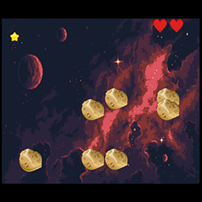
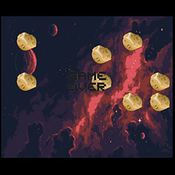

Sobre
Gold Star é um jogo desenvolvido por dois estudantes de Ciências da Computação do Centro Universitário FEI.
O objetivo do jogo é clicar na estrela dourada, porém a cada clique a sua velocidade aumenta, dificultando as suas chances de clicar nela.
Há também asteroides que atrapalham o jogador.
História
Você é um astronauta em uma missão para pegar uma estrela, porém ela é mágica,
para obter a estrela é necessário tocar nela 3 vezes. A estrela por ser especial ela fica em um campo de asteroides que vão dificultar a sua tarefa.
Você deve completar seu objetivo sem morrer.
Como jogar
Gold Star é um jogo onde o seu objetivo é clicar 3 vezes na estrela dourada, porém a cada
clique sua velocidade aumenta.

Ao clicar em um dos asteroides você perde uma vida. Ao perder 3 vidas você perde o jogo!
